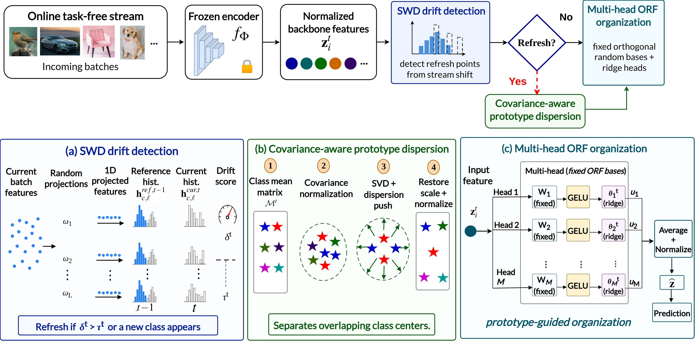
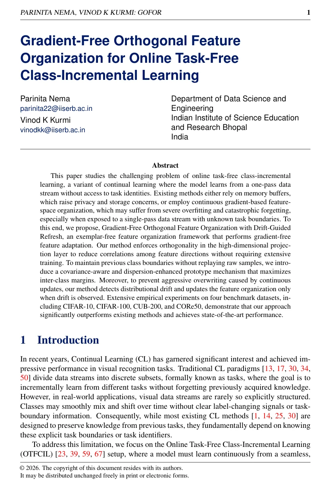

GOFOR · Framework
Abstract

This paper studies the challenging problem of online task-free class-incremental learning, a variant of continual learning where the model learns from a one-pass data stream without access to task identities. Existing methods either rely on memory buffers, which raise privacy and storage concerns, or employ continuous gradient-based feature-space organization, which may suffer from severe overfitting and catastrophic forgetting, especially when exposed to a single-pass data stream with unknown task boundaries. To this end, we propose Gradient-Free Orthogonal Feature Organization with Drift-Guided Refresh, an exemplar-free feature organization framework that performs gradient-free feature adaptation. Our method enforces orthogonality in the high-dimensional projection layer to reduce correlations among feature directions without requiring extensive training. To maintain previous class boundaries without replaying raw samples, we introduce a covariance-aware and dispersion-enhanced prototype mechanism that maximizes inter-class margins. Moreover, to prevent aggressive overwriting caused by continuous updates, our method detects distributional drift and updates the feature organization only when drift is observed. Extensive empirical experiments on four benchmark datasets, including CIFAR-10, CIFAR-100, CUB-200, and CORe50, demonstrate that our approach significantly outperforms existing methods and achieves state-of-the-art performance.
Download

Download paper (PDF) ↓Code
No unrelated code is linked here.
The code link can be added to this section once the GOFOR repository is public.
Datasets
Benchmarks evaluated in the paper:
If you find GOFOR useful in your research, please cite:
@inproceedings{nema2026gofor,
title = {Gradient-Free Orthogonal Feature Organization for Online Task-Free Class-Incremental Learning},
author = {Nema, Parinita and Kurmi, Vinod K.},
booktitle = {British Machine Vision Conference (BMVC)},
year = {2026},
note = {Accepted paper; final bibliographic details pending}
}Provisional BibTeX for the accepted BMVC 2026 paper; update with official proceedings metadata when available.
Connect
Questions about GOFOR or opportunities to collaborate?